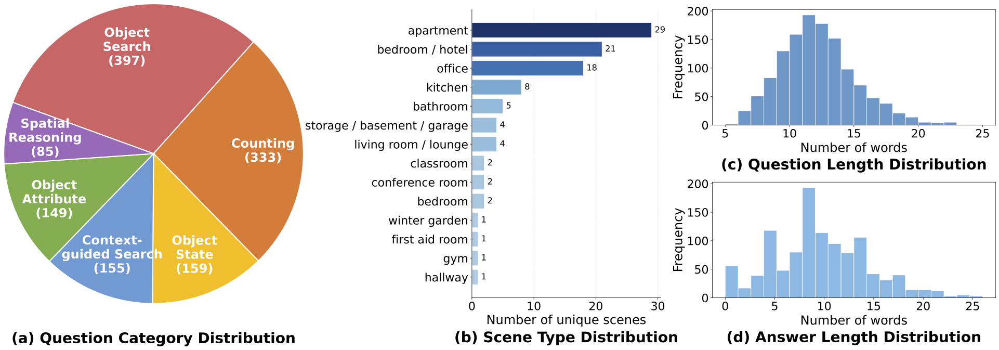
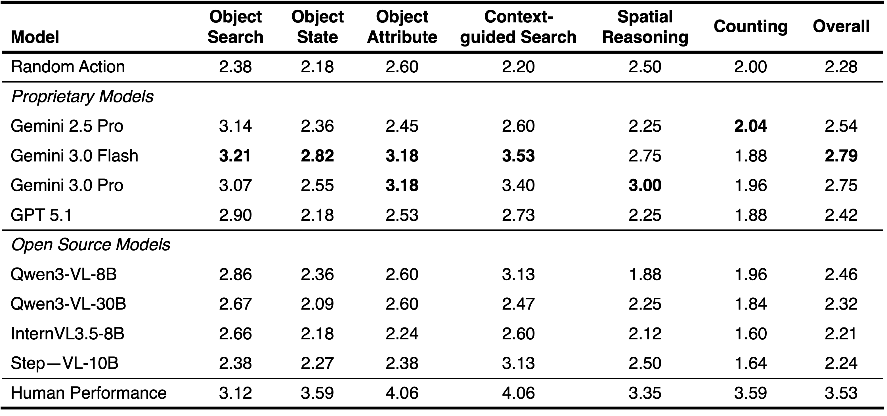

TL;DR: E3VS-Bench is a new benchmark for embodied 3D visual search that requires agents to actively control viewpoints in 6-DoF within photorealistic 3D Gaussian Splatting scenes to gather viewpoint-dependent evidence for question answering.

TL;DR: E3VS-Bench is a new benchmark for embodied 3D visual search that requires agents to actively control viewpoints in 6-DoF within photorealistic 3D Gaussian Splatting scenes to gather viewpoint-dependent evidence for question answering.
E3VS-Bench is a benchmark designed to evaluate viewpoint-dependent active perception in realistic 3D environments. The benchmark contains 99 photorealistic scenes reconstructed with 3D Gaussian Splatting and 2,014 question-driven episodes that require agents to actively search for visual evidence. Unlike existing benchmarks that rely on static observations or limited motion, agents must plan viewpoints in 6-DoF to resolve occlusions, depth ambiguities, and hidden attributes. Experiments with state-of-the-art VLMs reveal a large performance gap between models and humans, highlighting limitations in active perception and viewpoint planning.

Our benchmark focuses on six question categories that broadly evaluate an agent's capability in active perception and spatial reasoning. These categories test an agent's ability to (1) perform Object Search by locating specific items explicitly mentioned in the question, (2) recognize Object States by identifying conditions such as whether an object is open or closed, which requires the agent to navigate to a viewpoint where the state is clearly observable, (3) identify Object Attributes to discern physical characteristics and features, (4) conduct Context-guided Search to find objects based on their functional utility or situational context when the object name itself is not provided, (5) perform Spatial Reasoning to evaluate relative positions, and size relationships, and (6) perform Counting to quantify instances of a specific object class within the environment.

Dataset Statistics: (a) question category distribution of unique QA pairs classified by GPT 5.1, (b) scene type distribution, (c) the number of words in each question, and (d) the number of words in each answer.

We evaluate multiple state-of-the-art VLMs and compare their performance with humans. Despite strong 2D reasoning ability, all models exhibit a substantial gap from humans, revealing fundamental limitations in active perception and coherent viewpoint planning in real-world 3D environment
@misc{sakamoto2026e3vsbench,
title={E3VS-Bench: A Benchmark for Viewpoint-Dependent Active Perception in 3D Gaussian Splatting Scenes},
author={Koya Sakamoto and Taiki Miyanishi and Daichi Azuma and Shuhei Kurita and Shu Morikuni and Naoya Chiba and Motoaki Kawanabe and Yusuke Iwasawa and Yutaka Matsuo},
year={2026},
eprint={2604.17969},
archivePrefix={arXiv},
primaryClass={cs.CV},
url={https://arxiv.org/abs/2604.17969},
}